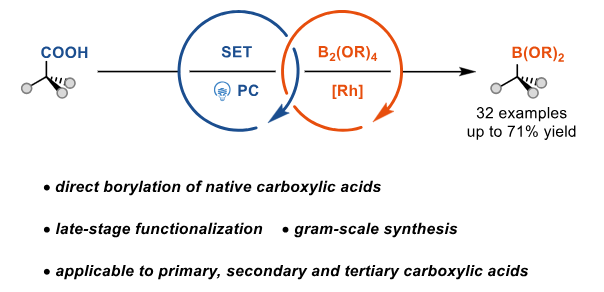
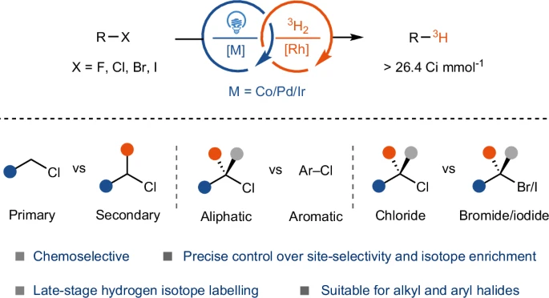
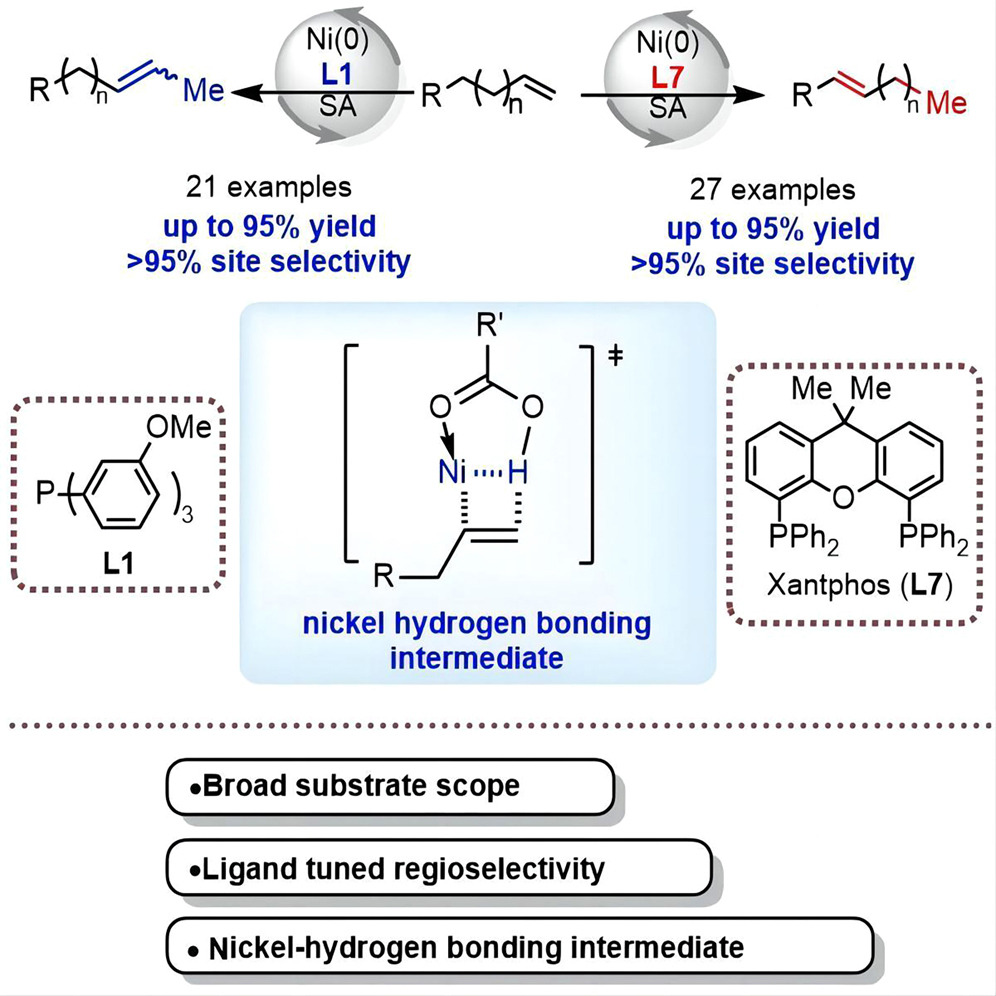
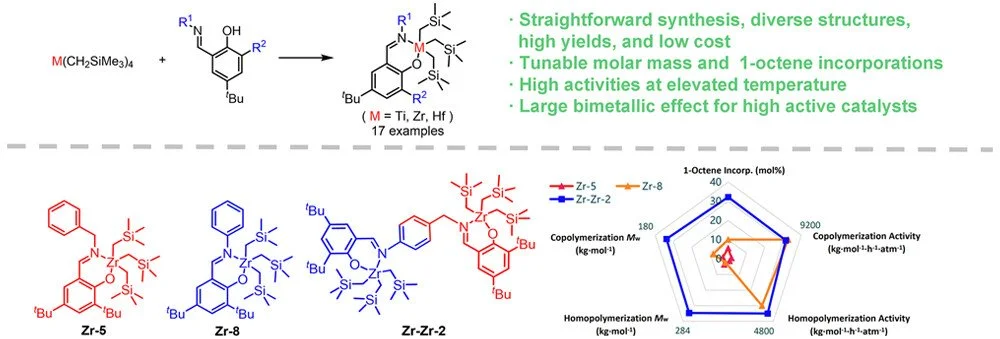

18. Direct Decarboxylative Borylation via Radical-Organometallic Relay.
Zhao,C.; Luo,M.; Zhang, B.; Zhao,D.*
J. Am. Chem. Soc. 2026, 148, 37310–37317.

18. Direct Decarboxylative Borylation via Radical-Organometallic Relay.
Zhao,C.; Luo,M.; Zhang, B.; Zhao,D.*
J. Am. Chem. Soc. 2026, 148, 37310–37317.

17. Illuminating Aromatic Deuteration.
Zhao,D.*; Ritter, T.*
Chem 2024, 10, 3266–3267.
16. Late-Stage Deuteration and Tritiation through Bioinspired Cooperative Hydrogenolysis.
Zhang, B.; Zhang, Z.; Wang, Y.; Zhao,D.*
Nature Synthesis 2025, 4, 444–452.
Highlighted by National Natural Science Foundation of China (基金委), Nature Synthesis, etc.

15. Nickel-Hydrogen Bonding Enabled, Phosphine Ligand-Tuned Regiodivergent Isomerization of Olefins.
Yang, S.; Zhang, Q.; Chen, H.*; Zhao,D.*; Wang, Y.*
Chem. Catal. 2024, 4, 101043.

14. Mono(phenoxy-imine) Group 4 Trialkyl Complexes: A Family of Olefin Polymerization Catalysts.
Meng, C.; Lu, L.; Guo, C.; Zhao,D.; Wang, Y.*
Macromolecules 2024, 57, 2697–2705.

13. Tritiation of Aryl Thianthrenium Salts with a Molecular Palladium Catalyst.
Zhao,D.; Petzold R.; Yan, J.; Ritter, T.*
Nature 2021, 600, 444–449.
Highlighted by Chemical & Engineering News, Nature Asia, Nature Synthesis, Phys.org, Synfact, etc.
12. Site-Selective Late-Stage Aromatic 18F-Fluorination via Aryl Sulfonium Salts.
Xu, P.; # Zhao, D.; # Berger, F.; Hamad, A.; Rickmeier, J.; Petzold, R.; Kondratiuk, M.; Bohdan, K.; Ritter, T.* (# equal contribution)
Angew. Chem. Int. Ed. 2020, 59, 1956–1960.
11. Palladium-Catalyzed Late-Stage Direct Arene Cyanation.
Zhao, D.; # Xu, P.; # Ritter, T.* (# equal contribution)
Chem. 2019, 5, 97–107 (front cover, most downloaded in Chem 2019).
10. Visible-Light-Promoted Photocatalytic B–C Coupling via Boron-Centered Carboranyl Radical: Facile Synthesis of B(3)-Arylated o-Carboranes.
Zhao,D.; Xie, Z.*
Angew. Chem. Int. Ed. 2016, 55, 3166–3170.
9. [3-N2-o-C2B10H11][BF4]: A Useful Synthon for Multiple Cage Boron Functionalizations of o-Carborane.
Zhao,D.; Xie, Z.*
Chem. Sci. 2016, 7, 5635-5639 (front cover).
8. Recent Advances in the Chemistry of Carborynes.
Zhao,D.; Xie, Z.*
Coord. Chem. Rev. 2016, 314, 14–33.
7. Functionalization of Carborane via Carboryne Intermediates.
Zhao, D.
Springer Singapore, 2016.
6. Unique Properties of C,C′-Linked nido-Biscarborane Tetraanions. Synthesis, Structure and Bonding of Ruthenium Monocarbollide via Unprecedented Cage Carbon Extrusion.
Zhao,D.; Zhang, J.; Lin, Z.; * Xie, Z.*
Chem. Commun. 2016, 52, 9992-9995 (front cover).
5. An Unprecedented Formal [5 + 2] Cycloaddition of Nitrones with o- Carboryne via Tandem [3 + 2] Cycloaddition/Oxygen Migration/Aromatization Sequence.
Zhao, D.; Zhang, J.; Xie, Z.*
J. Am. Chem. Soc. 2015, 137, 13938–13942.
4. Dearomative [2 + 2] Cycloaddition and Formal C–H Insertion Reaction of o-Carboryne with Indoles: Synthesis of Carborane-Functionalized Heterocycles.
Zhao, D.; Zhang, J.; Xie, Z.*
J. Am. Chem. Soc. 2015, 137, 9423–9428.
3. Facile Synthesis of o-Carborane-Substituted Alkenes and Allenes by a Regioselective Ene Reaction of 1,3-Dehydro-o-Carborane.
Zhao, D.; Zhang, J.; Xie, Z.*
Chem. –Eur. J. 2015, 21, 10334–10337.
2. Regioselective Insertion of o-Carborynes into the α-C–H Bond of Tertiary Amines: Synthesis of α-Carboranylated Amines.
Zhao,D.; Zhang, J.; Xie, Z.*
Angew. Chem. Int. Ed. 2014, 53, 12902–12906.
1. 1,3-Dehydro-o-Carborane: Generation and Reaction with Arenes.
Zhao,D.; Zhang, J.; Xie, Z.*
Angew. Chem. Int. Ed. 2014, 53, 8488–8491.